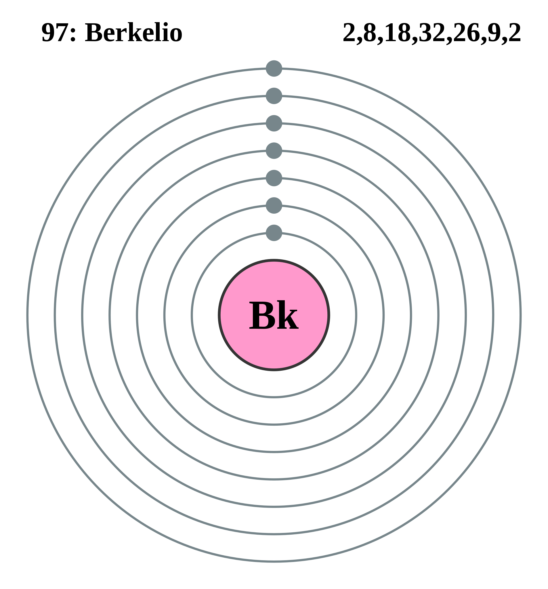

|
|
||
|
BERKELIO Elemento químico número atómico 97, símbolo Bk, el decimoctavo miembro de la serie de los actínidos. En esta serie de llena la capa electrónica 5f al mismo tiempo que en los lantánidos (tierras raras) se va ocupando la 4f. Estas dos series de elementos son muy semejantes en propiedades químicas, y el berkelio, salvo pequeñas diferencias en el radio iónico, se parece mucho a su homólogo, el terbio. El berkelio no se encuentra en la corteza terrestre por no tener isótopos estables. Debe prepararse por reacciones nucleares usando elementos blancos más abundantes. Estas reacciones incluyen bombardeo con partículas cargadas, irradiación con neutrones de reactores de alto flujo o producción en un dispositivo termonuclear. El berkelio no se da en la naturaleza, y no ha sido encontrado en la corteza terrestre, por lo que no hay motivo para considerar su peligro para la salud. |
 |
DATOS Número Atómico: 97 Peso Atómico: 247.0709 Electronegatividad: 1.3 Configuración Electrónica:[Rn]5f97s2 Estados de Oxidación: +3,+4 No. de Electrones de Valencia: --- |